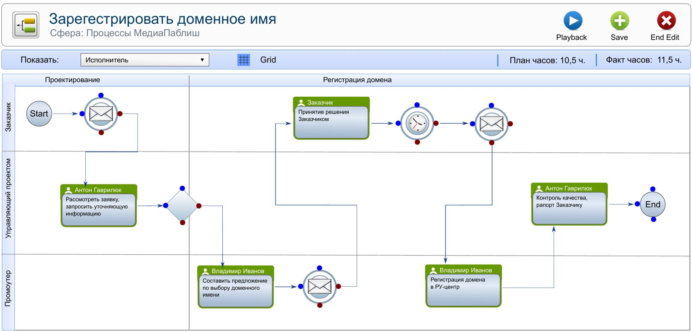
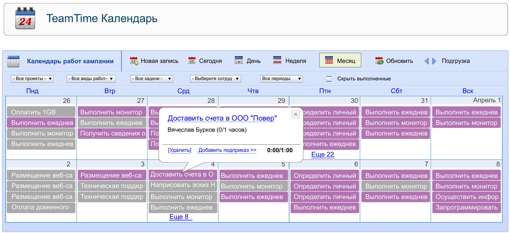

TeamTime BPM
El trabajo se mide en tiempo, no en dinero. Procesos, tareas e informes en un solo sistema: para que la dirección vea el trabajo real del equipo y cada empleado vea su aportación y su crecimiento.
max(R) = max(E)
Máximo respeto con máxima exigencia —
el modelo de A.S. Makárenko convertido en herramienta
Por qué nació TeamTime
TeamTime no se inventó «para el mercado». Surgió de la necesidad de quien dirige un equipo pequeño: ver lo que realmente se ha hecho, valorar con justicia el trabajo de cada uno y no ahogarse en el control.
Qué problema resolvía
- El trabajo es invisible. Un gestor de tareas muestra que una tarea está cerrada, pero no cuánto trabajo costó ni cómo se llegó al resultado.
- El dinero es una mala medida. Las tarifas difieren y los precios cambian, y la pregunta «cuánto vale este trabajo» se convierte pronto en regateo en lugar de una conversación sobre el resultado.
- El control devora al directivo. Sin un sistema, el director tiene que preguntar a cada uno en persona: pierde tiempo y mina la confianza.
- Los sistemas contables son demasiado pesados para la pequeña empresa. Emitir un acta de trabajos y calcular la paga no debería exigir un paquete contable aparte.
Estudio web «Media Publish»
El equipo trabaja según el principio «respeto + exigencia». Surge la necesidad de registrar el trabajo de cada uno: tareas, informes, horas.
Primera versión de TeamTime
Registro, Calendario, editor de procesos BPM, Carrera, Formalidades y portal del cliente. El sistema se convierte en la herramienta principal del estudio.
Empresario individual A.N. Gavrilyuk
TeamTime BPM sigue funcionando como herramienta de gestión de proyectos hasta hoy.
Equipo de I+D distribuido
Un prototipo funcional de TeamTime BPM gestiona el trabajo del equipo remoto de software embebido de OOO «Planta de Electrónica de Rostov».
Nueva edición
El concepto se formula como herramienta del modelo de Makárenko; robots y agentes de IA se incorporan a los procesos como ejecutores.
Tiempo, no dinero: el equivalente del trabajo útil
En TeamTime la medida del trabajo es la hora de trabajo útil confirmado. El dinero es una magnitud derivada: se calcula a partir de las horas, y no al revés.
Igual de claro para todos
El director, el ingeniero y el cliente entienden lo que es una hora de trabajo. Las horas se pueden acordar de antemano, comparar con el plan y discutir sin regateo.
No se devalúa
Los precios y los tipos de cambio varían, pero una hora de trabajo sigue siendo una hora. La experiencia acumulada de un empleado se expresa en horas y conserva su sentido durante años.
Solo cuenta lo útil
Una hora cuenta cuando la respaldan un informe y un resultado aceptado. La mera «presencia» en el sistema no se convierte en paga.
Comparable entre profesiones
Programador, diseñador y administrador trabajan con la misma medida. Las diferencias de cualificación se reflejan en la tarifa horaria, no en una lógica de registro distinta.
Crece con la persona
Las horas confirmadas en una especialidad son experiencia real. Quien acumula experiencia pasa al siguiente nivel, con una tarifa horaria más alta.
Una economía honesta
El coste de un proyecto o proceso se calcula con horas reales (Activity Based Costing), no con estimaciones «a ojo».
Cómo funciona TeamTime
Cinco principios sobre los que se apoya el sistema. Las capturas proceden de la primera versión de la interfaz, en ruso; la lógica que hay detrás no ha cambiado.
Registro de tiempo e informes
El empleado abre una tarea y pulsa «Empezar»: corre el contador de tiempo. Al terminar escribe un informe breve: qué se hizo, cuál es el resultado, cuánto tiempo llevó.
- El informe es el documento principal del día: breve, al grano, con el tiempo.
- El panel «¿Qué estamos haciendo?» muestra los informes del equipo en tiempo real.
- Las horas planificadas / reales se ven para cada tarea, proyecto y empleado.
- La dirección gestiona con informes, no con interrogatorios.

Procesos, proyectos, tareas: las unidades básicas de planificación y registro
El trabajo recurrente se describe una vez como proceso y luego se lanza desde un catálogo de plantillas. Cada tarea se redacta como una especificación: qué se da, qué se requiere, cómo hacerlo. En el sistema no hay encargos ambiguos.


La información adecuada, en el momento adecuado, a la persona adecuada
El proceso pasa el trabajo por la cadena por sí mismo: cuando un participante entrega su informe, el siguiente recibe su tarea, con instrucciones y datos de entrada.
- El empleado ve solo sus tareas y los procesos en los que participa, y recibe un plan de trabajo semanal.
- La dirección recibe informes y resúmenes por proyecto, tipo de trabajo y persona.
- El cliente ve en su portal (C-Report) el avance, los informes y las horas planificadas / reales.

Transparencia de los procesos
En TeamTime un proceso es un diagrama vivo, no un reglamento archivado en una carpeta. El diagrama muestra quién ejecuta cada paso, dónde está ahora el trabajo y cuántas horas se planificaron y se gastaron.
- Notación BPMN simplificada: 10 elementos estándar, comprensibles sin formación.
- Análisis de costes del proceso según las horas reales.
- Se ve enseguida en qué paso surgieron dificultades o errores.
- Archivo de procesos completados: la historia de cómo se hizo realmente el trabajo.

Tareas para robots e IA dentro de los procesos
El formato de tarea de TeamTime —«Dado · Requerido · Instrucciones»— es en esencia un enunciado listo para un agente de IA. Por eso un robot se convierte en un participante más del proceso: tiene su carril en el diagrama, sus tareas y sus informes.
- Los pasos rutinarios (recogida de datos, borradores de documentos, comprobaciones) los hace un agente.
- El agente entrega su informe en el mismo formato que una persona: el trabajo sigue siendo transparente.
- Las decisiones y el control de calidad quedan en manos de las personas.
- Se ve cuánto tiempo de los empleados ha liberado la automatización.
Módulos de software
Los módulos comparten una base común de empleados, proyectos y tareas. Se pueden implantar poco a poco: empezar por Registro y añadir los demás según se necesiten.
TeamTime Registro
El núcleo del sistema: empleados, proyectos, tipos de trabajo, tareas e informes, informes finales.
Portal del empleado
- Contador de tiempo de la tarea.
- Texto de la tarea en forma de especificación.
- Entrada de informes; filtro de tareas por estado, urgencia y proyecto.
Portal de la dirección
- Costes de tiempo y dinero por proyecto, tipo de trabajo y empleado.
- Informes de los empleados e informes finales por periodo.
Portal del cliente (C-Report)
- Diario de trabajos, informes y horas planificadas / reales por proyecto.
- Resultados intermedios, materiales e instrucciones.

TeamTime Calendar
El calendario de tareas del equipo: quién hace qué y cuándo.
- Vistas mes / semana / día, arrastrar y soltar tareas.
- Filtros por empleado, proyecto, tipo de trabajo y proceso.
- Subtareas y control de horas planificadas / reales que las incluye.
- Tareas periódicas: diarias, semanales, mensuales, anuales.
- Plan de trabajo semanal enviado por correo a cada empleado.

TeamTime BPM
Un editor de procesos de negocio en el que el diagrama es a la vez el conjunto de tareas y la logística de su ejecución.
- Notación BPMN simplificada de 10 elementos estándar.
- Cada acción del diagrama es una tarea con ejecutor, horas planificadas e instrucciones.
- Al lanzar un proceso, las tareas pasan automáticamente de un ejecutor al siguiente.
- Análisis de costes (ABC), catálogo de plantillas, archivo, áreas de actividad.
- Un paso puede ejecutarlo una persona, un robot o un agente de IA.
TeamTime Carrera
Registro de la experiencia real por especialidad y un programa de crecimiento para cada empleado.
- Vector de objetivos. Al contratar, la dirección y el empleado fijan juntos objetivos profesionales alineados con los de la empresa.
- Experiencia real. Las horas confirmadas de las tareas se acumulan automáticamente por habilidad y especialidad.
- Niveles y tarifa horaria. Retribución transparente, desde el becario hasta la dirección; se sube de nivel por horas confirmadas.
- Reciclaje profesional. Un itinerario formativo individual: plan de estudios como proceso BPMN, tareas de aprendizaje con informes y una hoja de evaluación de habilidades al final.


TeamTime Formalidades
Generación de documentos a partir de plantillas, con los datos que ya están en el sistema: procesos, informes, datos de clientes y de empleados.
- Para clientes: presupuestos, actas de trabajos realizados, facturas, contratos tipo.
- Para empleados: contratos, órdenes de pago en efectivo, cálculo de la paga.
- Para clientes potenciales: una calculadora de servicios en línea en el sitio web, construida a partir de un proceso.
- Plantillas propias con variables.


TeamTime, una herramienta del modelo de Makárenko para dirigir un colectivo
El modelo de A.S. Makárenko se apoya en la organización del colectivo, no en las cualidades personales de quien lo dirige. TeamTime convierte esa organización en práctica diaria: cada principio del modelo tiene en el sistema un mecanismo concreto.
max(R) = max(E)
Exigir mucho a una persona expresa respeto por ella; el respeto sin exigencia significa indiferencia. En TeamTime exigencia y respeto son una misma acción: una tarea bien planteada con un trabajo contado con honestidad.
| Principio del modelo | Cómo lo aplica TeamTime |
|---|---|
| Máxima exigencia | Cada tarea es «Dado · Requerido · Instrucciones» con horas planificadas. El resultado pasa un control de calidad; solo cuenta el trabajo confirmado. |
| Máximo respeto | Sin microgestión: la dirección ve el trabajo a través de los informes. La paga es previsible y se calcula a partir de las horas; la aportación de cada uno es visible para el equipo. |
| El informe del comandanteen la comuna, diario | Informe diario del empleado: breve, justificado, con el tiempo. El panel «¿Qué estamos haciendo?» en lugar de interrogatorios. |
| El colectivo como herramienta | Los procesos unen a las personas: el resultado de uno es la entrada de otro. Un diario de trabajos común hace al equipo visible para sí mismo. |
| Líneas de perspectiva | El vector de objetivos del módulo Carrera: la perspectiva cercana es el siguiente nivel; la lejana, una nueva especialidad. |
| Acción paralela | La dirección gestiona la forma de trabajar —procesos y plantillas—, no a cada persona por separado. |
| Trabajo productivo y aprendizaje | Las tareas de aprendizaje son tareas normales del proceso, con informes y horas; el itinerario formativo individual se lleva en el mismo sistema. |
| Tradiciones | El catálogo de plantillas de procesos guarda «cómo se hacen aquí las cosas» y lo transmite a los nuevos empleados. |
Más sobre el modelo
La historia de la colonia y de la comuna, las normas del trabajo colectivo, la experiencia de aplicación desde 2008Opciones de implantación
La funcionalidad es la misma en ambas opciones. La diferencia está en dónde se guardan los datos y quién mantiene el servidor.
SaaS
TeamTime en alojamiento en la nube
- Se puede empezar enseguida, sin servidor ni administrador.
- Actualizaciones, copias de seguridad y soporte a cargo del desarrollador.
- Acceso desde el navegador para empleados, dirección y clientes, desde cualquier lugar.
- Cómodo para equipos distribuidos y remotos.
Adecuado para: pequeñas empresas, estudios, equipos de proyecto y remotos.
Personal server
Dentro de la red interna de la empresa
- Los datos sobre trabajos, personas y procesos no salen del perímetro de la empresa.
- Instalación en el servidor del cliente; funcionamiento en red cerrada.
- Integración con los sistemas internos y con agentes de IA propios.
- Plantillas de procesos y documentos adaptadas a la normativa de la empresa.
Adecuado para: empresas industriales, departamentos de I+D, organizaciones con requisitos de seguridad de la información.
Hablemos de la implantación
Le mostraré el prototipo en funcionamiento, le contaré mi experiencia dirigiendo un equipo remoto y le ayudaré a elegir la opción de implantación.